무선설비산업기사 (2006-03-05 기출문제)
1과목: 디지털 전자회로
1. 그림과 같은 전파정류회로의 각 다이오드에 걸리는최대역전압의크기는 약 얼마인가?(단, 100V 는상용전압이고 n1 =n2 이다.)
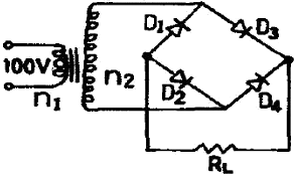
- 100[V]
- 141[V]
- 230[V]
- 282[V]
(정답률: 55%)

2. LC 동조 발진기에 비해 수정 발진기의 특징으로 잘못 설명한 것은?
- 안정도가 높다.
- Q가 비교적 크다.
- 발진 주파수를 가변하기 어렵다.
- 저주파 발진기로 적합하다.
(정답률: 알수없음)
3. 반송파전압 ec =Ec cos(wct+θ)를 신호전압 es=Es cos wst로 진폭변조시 피변조파의 상측파대의 진폭은?(,단ma :변조도)
- WC + WS
- (Ma ㆍ Ec) / 2
- WC - WS
- Ma ㆍ Ec
(정답률: 60%)
4. J-K 플립플롭에서 Jn =0, Kn = 1일때클록펄스가1 상태라면Qn+1 의 출려상태는?
- 부정
- 0
- 1
- 반전
(정답률: 54%)
5. 다음 논리식 중 좌우 항의 관계가 틀린 것은?
- (A +B)(A'+B') = AB' +A'B
- AB= A'+B'
- (A+B)=A'B' = AB' +A'B
- A⊕B=A B' + A'B
(정답률: 알수없음)
6. 에미터 접지 트랜지스터에서 동작점의 안정화를 위한 대책을 가장 적절하게 설명한 것은?
- 동작점의 베이스전류 I8만 일정하게 한다.
- 전류 이득 β가 일정하게 한다.
- 동작점의 IC의 VCE의 값을 일정하게 한 다.
- 역포화 전류ICO가 일정한 값을 갖도록 한다.
(정답률: 알수없음)
7. 결합상태가 DC(직류)로 구성된 멀티바이브레이터는?
- 무안정 멀티바이브레이터
- 단안정 멀티바이브레이터
- 쌍안정 멀티바이브레이터
- 무단안정 멀티바이브레이터
(정답률: 알수없음)
8. 토글 플립플롭(Toggle-F/F)을 2단직렬연결한 후 입력에 4[㎑] 펄스를 인가하면 출력은?
- 16[㎑]
- 8[㎑]
- 2[㎑]
- 1[㎑]
(정답률: 46%)
9. 다음중 디지털 변조방식에 속하지 않는것은?
- 위상변조(PM)
- 펄스부호변조(PCM)
- 적응델타변조(ADM)
- 차분펄스부호변조(DPCM)
(정답률: 알수없음)
10. 다음 중 LC발진기에서 일어나는 현상이 아닌 것은?
- 인입현상
- 기생진동
- 자외선현상
- Blocking 발진
(정답률: 알수없음)
11. 전가산기의 출력(S:합,Co: 캐리출력)에서 S=Co 가 되기 위한 입력 A, B, Ci(캐리입력) 조건은?
- A=0,B=0, Ci=1 또는 A=1,B=1, Ci=1
- A=0,B=0, Ci=0 또는 A=1,B=1, Ci=1
- A=1,B=1, Ci=0 또는 A=1,B=1, Ci=1
- A=0,B=0, Ci=0 또는 A=0,B=0, Ci=1
(정답률: 알수없음)
12. D 플립-플롭을 이용하여 그림과 같은회로를 구성하고, 클럭(clk) 단자에5[㎑] 클럭퍼스를 인가하였다. 동작시작단계에서Q출력을+5[V]로 하였다면 출력은?
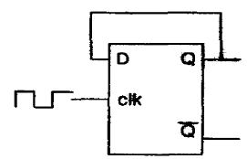
- 10[ ㎑]
- 2.5[ ㎑]
- 5[㎑]
- 5[V] DC
(정답률: 알수없음)
13. 전압이득이 50인 저주파 증폭기가 약10[%] 정도의 왜율을 가지고 있다. 이를2[%] 정도로 개선하기 위하여 걸어주어야하는 부퀘환율 β은 얼마 이어야 하는가?
- 10
- 4
- 0.02
- 0.08
(정답률: 알수없음)
14. 다음 불 대수의 정리 중 옳지 않은 것은?
- A+B=B+A
- A+B C=(A+B)(A+C)
- A+A'=1
- AㆍB = (A + B)'
(정답률: 34%)
15. JK 플립플롭을 이용하여 D형 플립플롭을 만들려면?
- J의 입력을 인버터를 통해 K에 연결한다.
- J와 K를 동일 입력으로 한다.
- Q의 입력을 J에 궤환시킨다.
- K의 입력을 J에 궤환시킨다.
(정답률: 알수없음)
16. 실리콘 제어정류소자(SCR)의 전류-전압 특성곡선은?
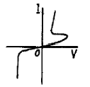
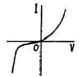
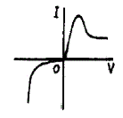
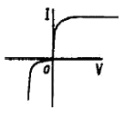
(정답률: 알수없음)
17. 그림과 같은 에미터 저항을 가진 CE증폭기에서 에미터 저항RE의 가장 중요한 역할은 무엇인가?
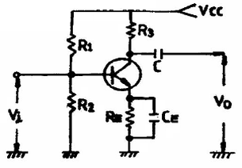
- S(안정계수)를 감소시켜 동작점이 안정된다.
- 주파수 대역을 증가시킨다.
- 바이어스 전압을 감소시킨다.
- 증폭회로의 출력을 증가시킨다.
(정답률: 54%)
18. 다음회로에서 R =1[ ㏁], R =4[ ㏁]일때 전압증폭도A 는얼마나되는가? (단,연산증폭기는이상적이다.)
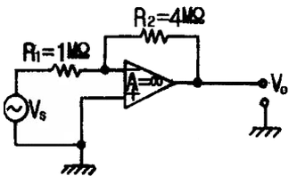
- -1
- -2
- -3
- -4
(정답률: 알수없음)
19. 슈미트 트리거(Schmitt trigger) 회로의 용도 설명중 틀린 것은?
- 구형파펄스 발생 회로로 사용된다.
- 임의의 파형에서 그 크기에 해당하는 펄스폭의 구형파를 얻기 위해서 사용된다.
- A-D 변환회로로 사용된다.
- D-A 변환회로로 사용된다.
(정답률: 알수없음)
20. 그림에서 병렬공진회로의 공진주파수가5[ ㎒]이다. 입력주파수가 5[㎒]일때 콜렉터전류는?
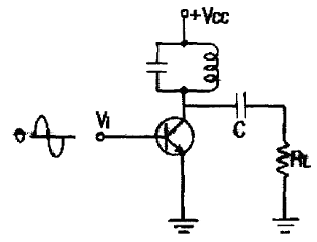
- 증가한다.
- 감소한다.
- 최대가 된다.
- 최소가 된다.
(정답률: 39%)
2과목: 무선통신 기기
21. 슈퍼 헤테로다인 수신기에서 중간 주파수가 455[㎑]이면 710㎑의 방송에 대한 영상 주파수는 얼마인가?
- 1420[ ㎑]
- 1520[ ㎑]
- 1620[ ㎑]
- 1720[ ㎑]
(정답률: 알수없음)
22. 마이크로웨이브(M/W) 중계방식 중 비가시 구간에 사용되는 무급전 중계방식을 바르게 설명한 것은?
- 금속의 반사판을 사용한다.
- 헤테로다인 중계방식을 사용한다.
- 검파 중계방식을 사용한다.
- 태양전자를 이용하여소용량으로 직접중계한다.
(정답률: 알수없음)
23. 증폭기의 출력 파형을 측정한 결과 기본파 진폭이 100[V] 제2고조파 진폭이8[V] 제3고조파 진폭이 6[V]였다. 이증폭기의 왜율(Distortion) 은 얼마인가?
- 3%
- 5%
- 7%
- 10%
(정답률: 19%)
24. 일반적으로 무선송ㆍ수신기용 발진기의조건 중 거리가 먼 것은?
- 주파수 안정도가 높을 것
- 발진출력이 안정적일 것
- 고주파 발생이 적을 것
- 발진출력의 일그러짐이 최소가 될 것
(정답률: 알수없음)
25. FM 수신기에서 주파수 변별기의 주파수 특성곡선(frequency response)의 설명중 접합하지 않은 것은?
- 중심 주파수 fo에 대하여 대칭적일 것
- 중심 주파수 fo 부근에서 경사가 될 수 있는 한 완만할 것
- 직선부분이 길 것
- 중심주파수 fo에서는 출력 전압이 0( 기준값) 일것
(정답률: 알수없음)
26. 진폭변조 송신기의 출력이 100[%] 변조시에 150[W]였다면 40[%] 변조시의 출력은?
- 30[W]
- 60[W]
- 212[W]
- 108[W]
(정답률: 알수없음)
27. 무선 수신기의 구성요소가 아닌 것은?
- 발진기
- 변조기.
- 증폭기
- 전원부
(정답률: 알수없음)
28. 부동충전(floating charge)에 대한 설명중 틀린 것은?
- 주전원이 정지되었을 때도 계속 사용이 가능하다.
- 축전지의 수명이 길어진다.
- 용량이 비교적 적어도 되며 효율이 좋아진다.
- 전압변동율은 감소되나 리플함유률은 증가한다.
(정답률: 30%)
29. 80[㎒]의 반송파를 최대 주파수편이60[㎑]로 하고 10[㎑]의 신호파로 주파수변조했을 경우 변조지수는?
- 4
- 6
- 8
- 10
(정답률: 알수없음)
30. 슈퍼헤테로다인 수신기에서 영상혼신을경감시키는 방법이 아닌 것은?
- 고주파 증폭단의 선택도를 높인다.
- 동조회로의 Q을 낮춘다.
- 중간주파수를 높게 선정한다.
- 이중 슈퍼헤테로다인방식으로 한다.
(정답률: 알수없음)
31. AM 송신기에서 반송파 발진기로 가장 많이 사용되는 발진기는?
- RC 발진기
- 수정 및 LC 발진기
- SAW 발진기
- 유전체 공진기 발진기
(정답률: 알수없음)
32. 고주파 증폭기의 이득이30[㏈], 변환이득이 -3[㏈]의 수신기에5[㎶]의 고주파 전압을 가하였더니 검파기 입력에 0.5[V]를얻었다. 중간 주파증폭기의 이득은?
- 67[㏈]
- 73[ ㏈]
- 82[㏈]
- 106[ ㏈]
(정답률: 알수없음)
33. 단파 수신기에서 페이딩(Fading)에 의한 수신 전계강도 변화에 의한 수신기 감도를 안정시키기 위한 회로로 가장 타당한 것은?
- 자동주파수 제어회로(AFC)
- 자동이득 조정회로(AGC)
- 자동잡음 제어회로(ANL)
- 자동전력 제어회로(APC)
(정답률: 67%)
34. 다음 중에서 증폭이 목적이 아닐경우, 효율이 낮은 A급 또는 AB급 증폭기로 안정하게 동작시키기 위하여 사용하는 증폭기는?
- 완충증폭기
- 전력증폭기
- 연산증폭기
- 동조증폭기
(정답률: 50%)
35. 2단 이상의 증폭기에서 잡음을 줄일 수 있는 가장 효과적인 방법은?
- 종단 증폭기의 이득은 첫단 증폭기에 비해 가능한 낮게 설계한다.
- 첫단 증폭기는 가능한 이득이 큰 증폭기로 구성한다.
- 첫단 증폭기를 트랜지스터(쌍극성 트랜지스터)증폭기로 구성한다.
- 첫단 증폭기를 저잡음을 발생하는 FET 증폭기로 구성한다.
(정답률: 알수없음)
36. 그림과 같은 전원 평활회로에서 추력전압의 맥동분을 적게 하려면?
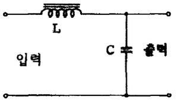
- L을 크게하고 C를 작게 한다.
- L을 작게하고 C를 크게 한다.
- L과 C를 모두 작게 한다.
- L과 C를 모두 크게 한다.
(정답률: 알수없음)
37. MASER의 특징의 설명 중 틀린 것은?
- 전계나자계가아닌전자spin의 energy준위 사이의 전이를 이용한 것이다.
- 저잡음 소자이다.
- 임의의 주파수로 발진 및 증폭을 동시에 행할수 있다.
- 보통 강자계중에 수용된다.
(정답률: 알수없음)
38. 전해약의 저항이나 접지저항을 측정할 때 교류를 사용하는 이유 중 가장 타당한 것은?
- 전극표면의 분극작용을 방지하기위하여
- 전극내부 저항을 감소 시키기위하여
- 습기를 제거하기 위하여
- 접지저항보다 작은 저항값을 지시하는 것을 방지하기위하여
(정답률: 60%)
39. 위성의 1차전원은 어느 것을 사용하는가?
- 태양전지
- Ni-Cd 전지
- Ni-H2전지
- 납축전지
(정답률: 50%)
40. FM 변조시 높은 주파수 성분을 강조하여 신호대 잡음비를 개선하기 위해서 사용하는 회로는?
- Pre-emphasis회로
- De-emphasis회로
- Discriminator회로
- Squelch회로
(정답률: 알수없음)
3과목: 안테나 개론
41. 도파관의 정합방법 중 비가역성 회로를사용하여 정합시키는 방법은?
- 도파관의 창
- 테이퍼 변성기
- 아이솔레이터
- 무반사 종단기
(정답률: 46%)
42. 주간에 15[㎒]로 외국과 원거리통신을하고자 했을때 이용되는 전리층은?
- E층
- D층
- F층
- Es층
(정답률: 알수없음)
43. 주파수 120[㎒], 전계강도 3[㎷/m]인전파를 반파 다이폴안테나로 수신 할 때의 수신기 단자 입력 전압은? (단, 수신기와 급전선의 정합은 완전하고, 급전선의 손실은 없는 것으로 한다.)
- 0.2×10-6[V]
- 1.2×10-3[V]
- 0.4×10-6[V]
- 2.4×10-3[V]
(정답률: 알수없음)
44. 대기중의 와류에 의하여 유전율이 불규칙한 공기뭉치가 발생함에 따라 입사전파의산란에 의해서 발생하는 페이딩은?
- 감쇠형페이딩
- 신틸레이션페이딩
- K형페이딩
- 덕트형페이딩
(정답률: 알수없음)
45. 야기안테나의 구조 중 가장 짧은 것은?
- 저역반사기
- 도파기
- 투사기
- 고역반사기
(정답률: 알수없음)
46. 파라볼라 안테나(parabola antenna)의이득은?
- 포물면경의 개구면에 반비례한다.
- 개구면의 면적과 이득은 전혀 관계가 없다.
- 같은 주파수에서는 개구면과 관계가 없다.
- 파장이 짧아질수록 이득이 매우 커진다.
(정답률: 64%)
47. 다음 중 주파수 100[㎒] 이상에서 사용되는 안테나가 아닌 것은?
- 슈퍼 게인 아테나(Super gain antenna)
- 야기 안테나(Yagi antenna)
- 코너리플렉터안테나(Cornerflector antenna)
- 웨이브안테나(Wave antenna)
(정답률: 알수없음)
48. 턴스타일(turnstyle) 안테나의 수평면내 지향 특성은?
- 전방향지향성
- 단방향지향성
- 양방향지향성
- 심장형지향성
(정답률: 알수없음)
49. 선로의 특성 임피던스를 Zo, 부하 임피이던스를 ZR이라고 할때 정재파비가 1인 경우는?
- 반사파가 없을 경우
- 반사계수가 1인 경우
- Z R ≠ Zo인 경우
- 진행파와 반사파의 크기가 같은 경우
(정답률: 알수없음)
50. 이지 S형 라디오 덕트가 발생하였을 때전파통로는?
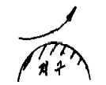
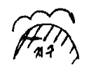
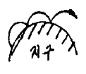
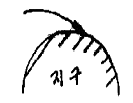
(정답률: 알수없음)
51. 단파가 전리층을 통과하거나 반사될 때전자나 공기분자와 충돌로 인하여 감쇠량이변하여 발생하는 페이딩은?
- 간섭성 페이딩
- 편파성 페이딩
- 흡수형 페이딩
- 선택형 페이딩
(정답률: 알수없음)
52. 연장 coil 은 어느 경우 사용 되는가?
- 높은 주파수에서 공진시키기 위해
- 안테나의 길이를 등가적으로 단축시키기위해
- 안테나의 길이를 등가적으로 연장시키기 위해
- 과전류방지를 위해
(정답률: 알수없음)
53. 통신에서 공전잡음을 경감시키는 방법이 아닌 것은?
- 수신대역폭을 좁게하여 선택도를 높인다.
- 송신 출력을 증대시켜 수신점의 S/N 비를 크게 한다.
- 수신기에 억제회로를 부착한다.
- 무지향성 안테나를 사용한다.
(정답률: 50%)
54. 전파의 성질에 관한 설명 중 잘못된 것은?
- 주파수가 높을수록 회절작용이 심하다.
- 전파는 횡파(Transverse Wave) 이다.
- 균일 매질중을 전파하는 전자파는 직진 한다.
- 굴절률이 다른매질의 경계면에서는 빛과 같이 굴절과 반사작용이 있다.
(정답률: 알수없음)
55. 다음 중 슈퍼턴스타일 안테나를 수직으로 적립(stack) 하는 이유는?
- Q를 높이기 위하여
- 이득을 높이기 위하여
- 광대역화를 위하여
- 전압급전을 위하여
(정답률: 알수없음)
56. 어느 무선국이 λ/4 접지 안테나로f=200[㎑] 전파를 기저부전류 10[A]로 복사 시킬때,30[㎞] 떨어진 지점에서 he=8[m]의 안테나로 수신한 경우 안테나에 유기된 개방 전압은?
- 16[㎷]
- 80[㎷]
- 160[㎷]
- 800[㎷]
(정답률: 40%)
57. 주파수 15[ ㎒]에서 미소 다이폴안테나의 실효 면적은?
- 12.5[m2]
- 27.4[m2]
- 35.4[m2]
- 47.7[m2]
(정답률: 37%)
58. 다음 중 텔레비전 수신용 안테나로 사용 되지 않는 것은?
- 브라운안테나
- 인라인안테나
- 코니컬이야안테나
- U라인(line) 안테나
(정답률: 34%)
59. 도파관에 관한 설명으로 옳지 않은 것은?
- 도파관은 차단주파수보다 낮은 주파수는 감쇠 시킨다.
- 구형도파관의 기본모드는 TM01 모드이다.
- 원형 도파관의 기본모드는. TE11 모드이다.
- 관내파장은 자유공간에서의 파장보다 길다.
(정답률: 알수없음)
60. 평형-불평형변환회로(Balun)에 대한 설명으로 맞는 것은?
- folded dipole과 동축케이블을 연결하는데 4: 1 Balun을 사용한다.
- 반파장 다이폴과 평행2선식 급전선을 접속할 때는 8: 1 Balun을 사용한다.
- whip 안테나와 동축케이블을 연결하는데 2: 1 Balun을 사용한다.
- 저지투관은 도파관에서 사용한다.
(정답률: 알수없음)
4과목: 전자계산기 일반 및 무선설비기준
61. 전자계산기에서 보수(complement)를 사용하는 이유로 가장 타당한 것은?
- 가산의 결과를 정확하게 얻기 위해
- 감산을 가산의 방법으로 처리하기위해
- 승산의 연산과정을 간단히 하기위해
- 제산의 불필요한 과정을 생략하기 위해
(정답률: 40%)
62. 운영체제(OS)의 목적과 관계가 먼 것은?
- 처리능력의 증대
- 응답시간의 단축
- 신뢰도의 향상
- 응용소프트웨어의 개발
(정답률: 70%)
63. 선형리스트 중 마지막으로 입력한 자료가 제일 먼저 출력되는 LiFO(Last in first out) 구조는?
- 트리
- 스택
- 큐
- 섹터
(정답률: 알수없음)
64. 전자계산기의 기본 논리회로는 조합논리회로와 순서논리회로로 구분된다. 이중 조합논리회로에 해당되는 것은?
- RAM
- 2진다운카운터
- 반가산기
- 2진업카운터
(정답률: 알수없음)
65. 다음 오퍼랜드어드레스방식 중에서 기억장치를 두 번 읽어야 원하는 데이터를 얻을 수 있는 방식?
- 간접어드레스지정방식
- 직접어드레스지정방식
- 상대어드레스지정방식
- 페이지어드레스방식
(정답률: 알수없음)
66. 어떠한 명령(instruction)이 수행되기 위해서 가장 먼저 이루어져야 하는 마이크로 오퍼레이션은 무엇인가?
- PC ←MAR
- PC ←PC+1
- MAR ←PC
- MBR ←1R
(정답률: 36%)
67. 다음 중 순서도를 작성하는 이유로 가장 타당한 것은?
- 시스템의 성능을 분석하기 위하여한다.
- C언어의 코딩을 생략하기 위하여한다.
- 프로그램을 작성할 경우 처리되는 자료의 흐름이 잘 이해되기 위하여한다.
- 시스템설계를 하기 위하여한다.
(정답률: 알수없음)
68. 다음 그림은 컴퓨터의 구성을 간략히 보여준다. 빈 블록과 가장 관계 깊은 것은?
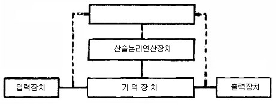
- 마이크로프로세서(microprocessor)
- 제어장치(control unit)
- 보조기억장치(auxiliary memory)
- 인터페이스(interface)
(정답률: 알수없음)
69. 데이지휠(daisy wheel) 을사용하는프린터는?
- 활자식라인프린터
- 도트매트릭스프린터
- 레이저프린터
- 잉크젯프린터
(정답률: 24%)
70. 다음의time chart 에해당하는것은어느Gate인가?
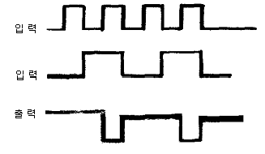
- AND
- OR
- NAND
- NOR
(정답률: 알수없음)
71. 무선 종사자의 기술자격의 취소등의 규정에 의하여 업무의 종사를 정지 당한 후 무선설비의 조작 또는 공사를 한자에 대한벌칙으로 맞는 것은?
- 100만원이하의 과태료
- 200만원이하의 과태료
- 300만원이하의 과태료
- 500만원이하의 과태료
(정답률: 40%)
72. 무선설비형식검정합격기기의 인증표시에 기재사항이 아닌 것은?
- 기기의 명칭
- 인증번호
- 제조연월일
- 기기의조작방법
(정답률: 알수없음)
73. 전파의 형식표시 중 등급의 기호가 맞지 않는 것은?
- 첫째기호는 주반송파의 변조형식
- 둘째기호는 주반송파를 변조시키는 신호의 성
- 셋째 기호는 송신 할 정보의 형태
- 넷째 기호는 다중화 특성
(정답률: 알수없음)
74. 무선설비의 동작 안정을 위한 조건으로맞지 않는 것은?
- 무선설비는 전원정격전압의 ±10% 이내의 범위에서 변동된 경우에도 안정적으로 동작해야 한다.
- 비상 전원은 48시간 이상 상시 운용할 수 있는 무정전 전원설비를 설치해야 한다.
- 무선설비는 사용상태에서 통상 접하는 온도 및 습도의 변화, 진동또는 충격 등의 경우에도 저장없이 동작해야한다.
- 무선설비는 외부의 기계적 잡음등의 방해를 받지 않은 안전한 장소에 설치해야한다.
(정답률: 알수없음)
75. 다음 중에서 형식등록을 하여야하는 무선설비의 기기는?
- 네비텍스수신기
- 디지털선택호출장치의 기기
- 비상위치지시용 무선표지설비
- 라디오부이의 기기
(정답률: 알수없음)
76. 다음 중 전파진흥기본계획에 포함되어야 할 사항이 아닌 것은?
- 전파산업육성의 기본방향
- 새로운 전파자원의 개발
- 무선단말기의 개발 및 양산
- 전파환경의 개선
(정답률: 46%)
77. 전파형식 R3E를 사용하는 무선설비의 공중선전 력의 표시방법은?
- 평균전력
- 순간전력
- 반송파전력
- 첨두포락선전력
(정답률: 37%)
78. 535㎑초과 10606.5㎑이하의 주파수를 발사하는 방송국의 주파수 허용편차는?
- 10㎐
- 50㎐
- 100㎐
- 1㎑
(정답률: 50%)
79. 전자파 적합등록 대상기기에서 제외될 수 있는 것은?
- 방송수신기기
- 불꽃점화 엔진구동기기
- 가정용 전기기기
- 전시용 이륜자동차
(정답률: 알수없음)
80. 다음 중 R3E 전파의 점유주파수대폭의 허용치는?
- 3㎑
- 3.5㎑
- 4㎑
- 4.5㎑
(정답률: 알수없음)